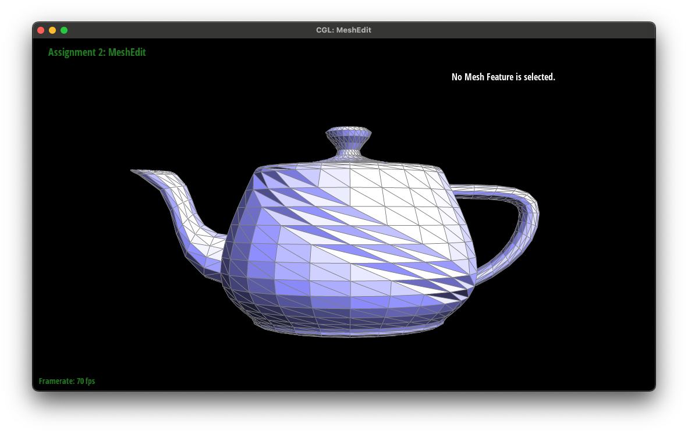

CS 184/284A: Computer Graphics and Imaging, Spring 2024
Homework 2: Mesh Editing
Alejandro Escontrela
Section I: Bezier Curves and Surfaces
Part 1: Bezier Curves with 1D de Casteljau Subdivision
De Casteljau's algorithm is a geometric technique used to construct Bezier curves, a fundamental concept in computer graphics and CAD (Computer-Aided Design). It works by taking a set of control points and recursively interpolating between them to approximate the shape of the curve. Starting with the original control points, the algorithm linearly interpolates between pairs of points to generate new points, which are then used in the next iteration of interpolation. This process is repeated, each time with the newly generated points, until it narrows down to a single point on the curve for a given parameter value. By varying this parameter across a range, the algorithm can plot the entire Bezier curve with great precision, making it a powerful tool for graphic design and animation.
Step 1
Step 2
Step 3
Step 4
Step 5
Control points at different position
Part 2: Bezier Surfaces with Separable 1D de Casteljau
De Casteljau's algorithm, when applied to Bezier surfaces, operates by performing two sets of linear interpolations: first along one direction of the control point grid, then along the perpendicular direction. This approach effectively refines a grid of control points down to a single point on the Bezier surface for specific parameter values (u, v). The process involves iteratively interpolating between points in both the u and v directions, gradually narrowing down to the exact point on the surface. Implemented in code, this requires nested iterations or recursive functions to handle the interpolations in two dimensions, allowing for precise evaluation and rendering of Bezier surfaces.
Section II: Triangle Meshes and Half-Edge Data Structure
Part 3: Area-Weighted Vertex Normals
To implement area-weighted vertex normals, I looped through each half-edge protruding from
the vertex, used the cross-product of two adjacent edges to calculate that normal. I then
averaged the normal and returned it.
Flat shading
Phong shading
Part 4: Edge Flip
First, I check if the edge is on the boundary of the mesh; if it is, I simply return it without any changes. If not, I proceed to rewire the connections among half-edges, vertices, edges, and faces to achieve the flip. This involves carefully updating attributes like next, twin, vertex, edge, and face for the half-edges involved in the flip. I also make sure that each vertex is updated to point to a correct outgoing half-edge, each edge to one of its half-edges, and each face to one of the half-edges on its boundary. By doing this, I'm essentially changing the mesh's topology around the flipped edge, switching the diagonal that connects the vertices of the quadrilateral formed by the two faces adjacent to the edge.
Before flipping

After flipping
Part 5: Edge Split
Initially, I check if the edge is at the boundary of the mesh, and if so, I return an empty vertex iterator since splitting boundary edges isn't handled here. Assuming the edge isn't at the boundary, I proceed by setting up iterators for the half-edges, vertices, edges, and faces involved in and around the edge to be split.
The core of the process involves creating a new vertex at the midpoint of the edge to be split, which requires calculating the average position of the edge's two vertices. I then introduce new half-edges, edges, and faces to accommodate the split, ensuring that the mesh's topology is updated correctly. This includes reassigning the next, twin, vertex, edge, and face attributes for the affected half-edges to maintain the integrity of the mesh's structure.
The newly created vertex, edges, and faces are integrated into the mesh, with careful attention to maintaining consistent connectivity and orientation among all elements. This ensures that the mesh remains well-formed and that the new vertex correctly reflects the split edge's geometry. Finally, I return the iterator to the newly inserted vertex, now a part of the updated mesh topology.
Original
With edge split
Original
With edge flip and split
Part 6: Loop Subdivision for Mesh Upsampling
My first step is to adjust the positions of all existing vertices according to the Loop subdivision rules, which involves calculating a new position based on each vertex's neighbors. This is done to smooth out the mesh and prepare it for the addition of new vertices. I make sure to mark these original vertices as such to distinguish them later on.
Next, I calculate new positions for the points that will be placed in the middle of the existing edges. These new positions are a blend of the positions of the edge's endpoints and the adjacent vertices, aiming for a smooth transition. After that, I split every edge in the mesh to introduce new vertices at these calculated positions, marking both the new vertices and the edges resulting from these splits as new. This step increases the mesh's complexity by adding more vertices and edges.
Finally, I flip certain edges to improve the mesh's topology, specifically targeting edges that connect an old vertex to a new one, which helps in distributing the mesh's triangles more evenly. After all these steps, I update the positions of the original vertices to their new calculated positions to complete the subdivision process. This series of operations effectively increases the number of triangles, resulting in a smoother, more refined mesh.
Loop subdivision can over-smooth sharp edges and corners as shown in the first row of the below figure.
Interestingly, pre-splitting edges reduces these effects.
Before subdivision
After subdivision
Before subdivision with pre-split edges
After subdivision with pre-split edges
Repeatedly upsampling the provided cube using loop subdivision leads to a weird, oblong geometry.
0 step
1 step
2 step
3 step
Pre-splitting some edges prevents this from developing a strange shape, but further contrains the cube to it's original shape, preventing it from becoming a sphere.
A better initial geometry would look something like a dodecahedron, which has more evenly distributed triangles and would not require pre-splitting edges to prevent the cube from becoming oblong, and would better approximate a sphere.